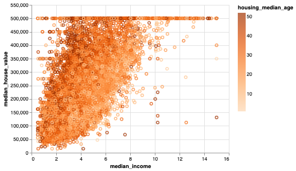

Motivation
The California Housing Prices dataset was sourced on Kaggle and provides information on 20,640 districts in California (but only 500 are taken for this homework, as altair cannot handle more than 500 rows of data). The data has metrics such as housing median age, total rooms, total bedrooms, and population for each block group in California. Each block group, or district, typically has a popopulation of 600 to 3000 people.
I thought this data was interesting because I'm from California, and being so, am well aware of the high housing prices throughout my state. That being said, I've never done actual research or looked at data regarding the high prices before. So when I saw this dataset, I thought it would be a good opportunity to see, firsthand, the costs of these houses and neighborhoods. I like that this data has a bunch of different metrics.
Visualization 1

I used the mark point visualization to create a graph that depicts the relationship between median income and median house value per each block group in California. The different colors of the circles represent the housing median age, with the dark purple representing older houses and the light purple representing newer houses. I chose to use a purple gradient to represent the median age because I thought that a gradient would be more visually appealing to the eye as well as allow for overlapping data to be thoroughly represented. The user can hover over each individual point, and when they do, they can see how the ocean proximity of the houses. Additionally, the user is able to zoom in an out for ease of eye.
Visualization 2

I wanted to create a visualization that would show the total number of bedrooms of the different block groups in California. Though a pie chart isn't ideal, I think having a pie chart with an intense color palette clearly shows the different amounts of rooms. For example, from this graph, you can definitively see that the blues are the lowest amount of total bedrooms (less than 500) whereas the purple and the browns are the highest amount of total bedrooms (2000 plus). I also included an interactive feature for the user to be able to hover over the pie chart and see for themselves, the total number of bedrooms.